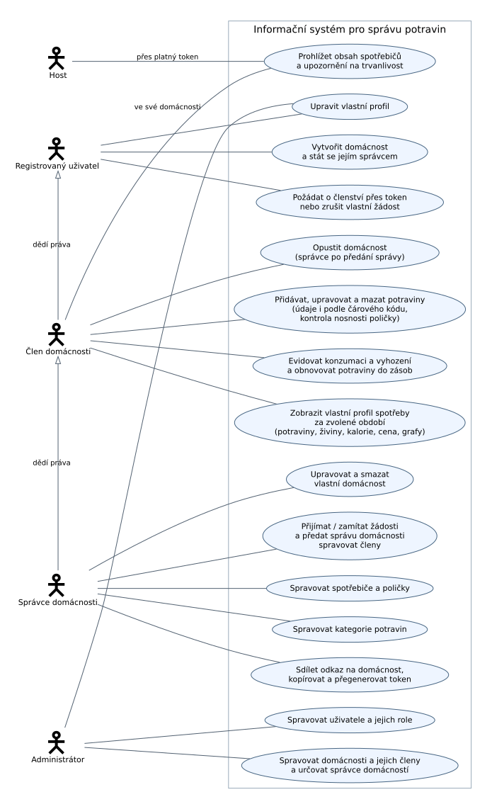

FIT lednice
- Autoři
-
Vojtěch Voldřich
xvoldrv00@stud.fit.vutbr.cz
- Vedoucí, administrativní rozhraní, domovská stránka pro správce/čekatele na členství, správa domácnosti, podání žádosti o členství, nasazení
-
Petr Kotek
xkotekp00@stud.fit.vutbr.cz
- Services, Entity, Databáze, Kategorie, Spotřebiče, Police, Jídlo, Stránkování
-
Josef Pasek
xpasekj00@stud.fit.vutbr.cz
- Přihlášení, host, profil spotřeby, napojení na externí API
- URL aplikace
-
http://www.stud.fit.vutbr.cz/~xvoldrv00/IIS
Uživatelé systému pro testování
Uveďte prosím existující zástupce všech rolí uživatelů.
| Login |
Heslo |
Role |
| admin |
admin |
Administrátor |
| prodavac |
prodavac |
Prodavač |
| franta |
franta |
Zákazník |
Případy užití

Video
Přiložte odkaz na komentované video demostrující použití informačního
systému. Zaměřte se na případy užití definované zadáním (např. registrace
uživatele, správa uživatelů a činnosti jednotlivých rolí). Video nahrajte
například na VUT Google Drive, kde ho bude možné přímo spustit z odkazu.
Implementace
Stručná dokumentace k implementaci, která popisuje, které části projektu
(např. PHP skripty) implementují jednotlivé případy použití.
Databáze

Rozšíření
- Napojení na externí potravinovou databázi dle čárového kódu (Open Food Facts - Česko)
- Grafy kalorického a nutričního profilu v čase
Instalace
Stručně popište:
- postup instalace na server,
- softwarové požadavky (verze PHP apod.),
- jak rozbalit, konfigurovat, inicializovat databázi, ...
Známé problémy
Nejsme si vědomi žádné chybějící funkcionality